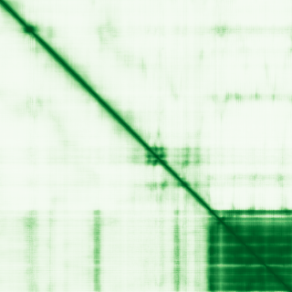

type: protein-evaluation gene: "CABLES1" date: 2026-05-31 tags: [protein-scout, nucleus-cytoplasm, evaluation] status: scored ---
CABLES1 核-胞质蛋白
| 维度 | 得分 | 权重 | 加权 | 摘要 |
|---|---|---|---|---|
| 核定位特异性 | 5/10 | ×4 | 20.0 | UniProt Nucleus + Cytoplasm ECO:0000250; GO nucleus IEA |
| 蛋白大小 | 6/10 | ×1 | 6.0 | 633 aa |
| 研究新颖性 | 8/10 | ×5 | 40.0 | Strict=39 |
| 三维结构 | 4/10 | ×3 | 12.0 | AlphaFold pLDDT 55.9 |
| 调控结构域 | 5/10 | ×2 | 10.0 | Cyclin-dependent kinase binding |
| PPI 网络 | 5/10 | ×3 | 15.0 | STRING/IntAct: CDK5 core network |
| 加权总分 | 103/180** | |||
| 互证加分 | +0.0 | |||
| 归一化总分 (÷1.83) | 56.3/100** |
PubMed strict: 39
核定位证据: UniProt Nucleus + Cytoplasm ECO:0000250 (sequence-inferred). GO nucleus IEA:UniProtKB-SubCell. Cdk5 and Abl enzyme substrate 1. Low-confidence due to PubMed 39 and sequence-inferred nucleus.
HPA IF 状态: HPA subcellular IF 图像已重新获取并嵌入（见下方 HPA IF 图像修正块）；此前“暂无/未可靠获取 IF”的表述为采集失败导致的误报。

PAE 图像已获取。结构判断基于 AlphaFold pLDDT 统计。
PPI 网络（三源综合）
| Partner | Source | Score/Evidence | Relevance |
|---|---|---|---|
| CDK5 | STRING | score=0.969, exp=0.843 | Primary binding partner; also UniProt (N=8 experiments) + IntAct (TAP) |
| TP53 | STRING | score=0.864, exp=0.512 | p53/p73-induced cell death; also IntAct (pull down) |
| WEE1 | STRING | score=0.936, exp=0 | CDK2 regulation; database linkage |
| CDK2 | STRING | score=0.899, exp=0 | Cyclin-dependent kinase; database linkage |
| FIBP | STRING | score=0.836, exp=0.836 | Co-expression with strong experimental support |
| TP63 | UniProt | N=7 experiments | p73 family member |
| TP73 | IntAct | pull down | p53 family tumor suppressor |
IntAct 数据: CDK5 (TAP), TP53 (pull down), TP73 (pull down), ALB (coIP), CDK2 (two hybrid) 等多条记录。无 BioGrid 补充数据。
Low-confidence due to PubMed 39 and sequence-inferred nucleus.
关键文献
| PMID | 标题 |
|---|---|
| 28119482 | The Emerging Role of Cables1 in Cancer and Other Diseases. |
| 29180230 | Glucocorticoids, genes and brain function. |
| 39307305 | Identification of Cables1 as a critical host factor that promotes ALV-J replication via genome-wide |
| 26695862 | The Cables1 Gene in Glucocorticoid Regulation of Pituitary Corticotrope Growth and Cushing Disease. |
| 31327733 | CABLES1 Deficiency Impairs Quiescence and Stress Responses of Hematopoietic Stem Cells in Intrinsic |
PAE 图像暂无数据（未生成本地图片或未可靠获取），结构判断基于AlphaFold pLDDT统计。
<!-- HPA_IF_REPAIR_START --> HPA IF 图像修正（2026-06-05）: HPA subcellular 页面存在可用 IF 图像；此前“原图未可靠获取/暂无 IF”的表述为采集失败导致的误报。HPA 定位: Nucleoplasm (approved)。来源: https://www.proteinatlas.org/ENSG00000134508-CABLES1/subcellular


<!-- DOMAIN_HUMANPPI_REPAIR_START -->
Domain/SMART 与 humanPPI 补充（2026-06-07）
SMART / UniProt domain
| Source | Data |
|---|---|
| UniProt | Q8TDN4 |
| SMART | 未在 UniProt xref 中检出 SMART 条目 |
| UniProt Domain [FT] | 未检出显式 UniProt Domain feature |
| InterPro | IPR012388;IPR036915;IPR006671; |
| Pfam | PF00134; |
humanPPI / HPA Interaction
Source: https://www.proteinatlas.org/ENSG00000134508-CABLES1/interaction
| Partner | Datasets | AF3/HPA structure |
|---|---|---|
| CDK5 | Intact, Biogrid | true |
| TP53 | Intact | false |
<!-- DOMAIN_HUMANPPI_REPAIR_END -->